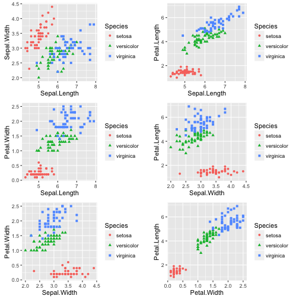

We used the Iris data set and built a predictive model. An accurate prediction of flower species was developed using only the following attributes:
- Sepal Length
- Sepal Width
- Petal Width
- Petal Length
Nate Reed
We used the Iris data set and built a predictive model. An accurate prediction of flower species was developed using only the following attributes:
Shown here are plots relating pairs of sepal and petal attributes with species:

Random Forest, a highly accurate classification and regression algorithm, was used for the predictive model. The procedure was as follows:
library(caret)
library(randomForest)
library(e1071)
data(iris)
set.seed(12345)
inTrain<-createDataPartition(iris$Species, p=0.7, list=FALSE)
training<-iris[inTrain,]
testing<-iris[-inTrain,]
First, the model was trained:
modfit<-train(Species~., method="rf", data=training)
Model fit was assessed on the testing set. As we see below, there was only one inaccurate classification out of 45:
predictions<-predict(modfit, testing[,-5])
table(predictions, testing$Species)
##
## predictions setosa versicolor virginica
## setosa 15 0 0
## versicolor 0 15 1
## virginica 0 0 14